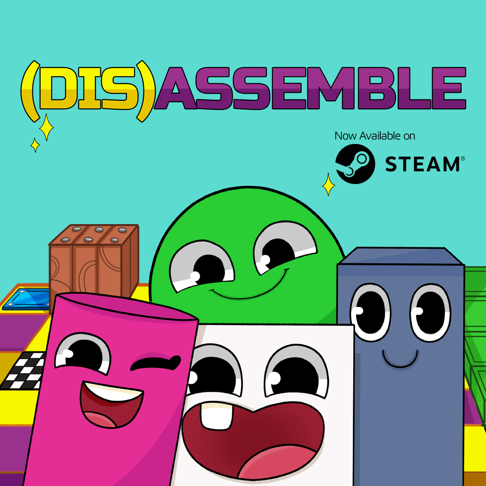

My name is Gustavo Lindenberg Pacheco.
(Also known as "AguaCrunch" or "Agua" online.)
I'm a 23-year old from São Paulo, Brazil. I specialize in digital music arrangement and composition, as well as programming for video games or in general.
In this webpage you may find examples of my work, as well as information about me and my experiences.
LANGUAGES
- English (Fluent)
- Portuguese (Fluent, Native)
- Spanish (Intermediate)
INTERESTS
- Game Design, Game Programming
- Soundtrack Production, Sound Design, Animation Soundtrack Scoring, Arrangements, Remixes
Music
Here you may find some of my musical works, including original compositions, remixes and arrangements, "High-Quality Rips" (edits of videogame music) and game-inspired works.
You may also visit my YouTube channel and SoundCloud profiles, both of which have tracks I have not shared here, such as this one!
(Dis)assemble Original Soundtrack

(Dis)assemble is a cute and colorful puzzle game about combining sentient pieces to change how they move. Developed by Dragon Fruit Studio, all tracks were composed by me to dynamically switch between each other, all contributing to the lighthearted puzzle game feel. The game is available on Steam.
This is the first track I had made for the game! The folks from Dragon Fruit Studio specifically asked me to get inspiration from the game Snipperclips, aiming for "playful music". That is what I tried to accomplish, although I went into a slightly relaxing feel as well, given the context of a low-energy puzzle game.
I cannot lie... I adore jazz. For all level themes except the first, the developers game me their color palettes to brainstorm ideas for how they would feel music-wise, and the darker look of one of them suited smooth jazz perfectly.
If "Light Mood" was playful, this one surely cranks that up. It almost sounds childish, does it not? The voice samples directly from Super Mario Sunshine and the whistling were my main elements to lean into pure childlike joy.
This one was interesting to compose (and a bit of a headache, frankly), due to the fact that it was made over one lo-fi sample, thus forcing me to stick to its chords. Somehow, it worked out...! The developers seemed happy with its atmosphere.
Gamejams

These are all Gamejam projects I have developed with the help of friends and colleagues, assisting with its conceiving through design, code and music. You may find some music samples from these games below.
Devs At Work was quite fresh to work on. The idea was to build one big music track that loops for the entire duration of the game, while dynamically adding more instrument layers as the player progresses, alongside the game visually gaining more detail. The sample above contains all variations of this main track in one single file, so you may skip ahead to hear each variation. As for the energy, I tried to go for something similar to Pigstep (from Minecraft) and the more relaxing tracks from Persona 5, using an organ as the main melody.
This one went through a lot of iterations! "WHAT THE HELL?"" is a classic-style 2D beat-em-up game, and the artists went for a stylish pixel-art look. To match that aesthetic but with a more modern feel to it, I went with what I will call "pseudo-chiptune". Lots of elements from older games like square waves and arpeggios are present, but I also did not restrict myself with channel limitations whatsoever, resulting in something with lots of fun melodic layers. See if you can notice different instruments coming in at times!
Halloween has a very specific atmosphere that is hard to isolate it from. Considering the undead, monster-y mood of Mansion Mania, my main way to cater towards that vibe was to use stereotypical "spooky" elements like harpsicords, howling wolves and... jazz. I simply cannot escape jazz.
Out of all these tracks, this one may have been my favorite to work on. Story Beats is a rhythm-based RPG, so the battle track needed a strong rhythmic feel to benefit the gameplay. Additionally, since the art is cartoony and the battle mechanic is quite unique, my biggest musical inspiraiton was the Mario & Luigi series of games and its vast array of happy-go-lucky battle music.
Devs At Work - Itch.io | WHAT THE HELL? - Newgrounds | Mansion Mania - Itch.io | Story Beats - Itch.ioFriday Night Funkin' - Mano's Beach Hangout OST
 (Art by @pb_lauro)
(Art by @pb_lauro)
Some original compositions and remixes for my upcoming Friday Night Funkin mod, titled "Manos Beach Hangout". The overall style is more acoustic and inspired by Brazilian genres, but ultimately it boils down to ideas I thought would be fun.
This kind of "vocals" is common for all my Friday Night Funkin works, though they may sound vastly different between tracks. And in case you are wondering, that voice in all the tracks is my own.
Mad Virus Attack OST
 (Arte por @Rusron1 and @SERIZYU)
(Arte por @Rusron1 and @SERIZYU)
To wrap up Friday Night Funkin content, we have some of the soundtrack for the Mad Virus Attack mod, which I direct with my friends Rusron and Zack. Again, several genres have been used, including chiptune, electro swing and jazz.
Mad Virus Attack V2 - GameJoltMisc.
 (Drawing by @pb_lauro)
(Drawing by @pb_lauro)
Other tracks that did not fit any of the previous categories, mostly remixes.
Contact
- Email: pachecoglp02@gmail.com
- Itch.io: https://gustavolp1.itch.io/
- GitHub: https://github.com/gustavolp1
- LinkedIn: https://www.linkedin.com/in/gustavo-lindenberg/
- Phone: +55 (11) 95300-3645